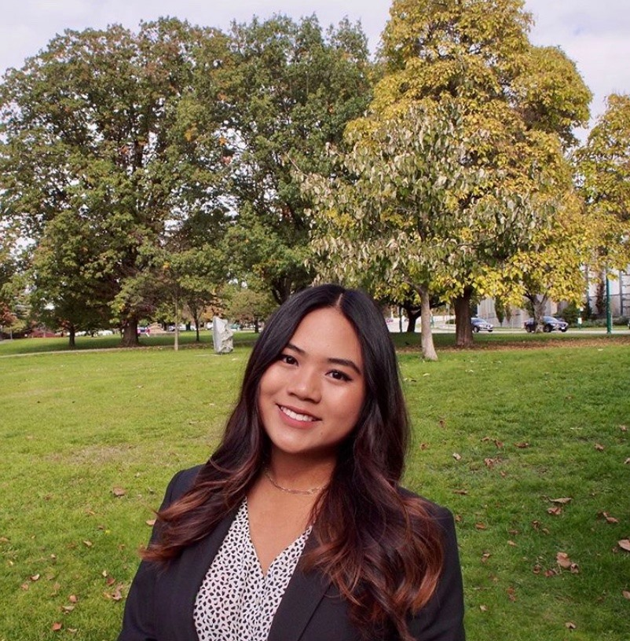
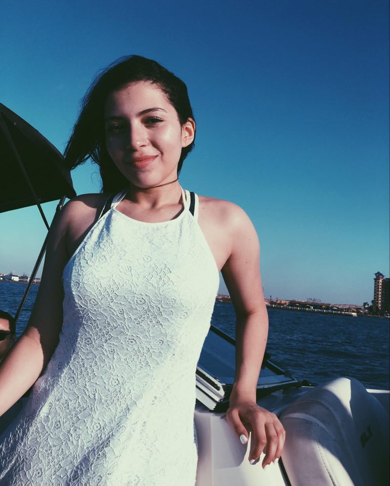
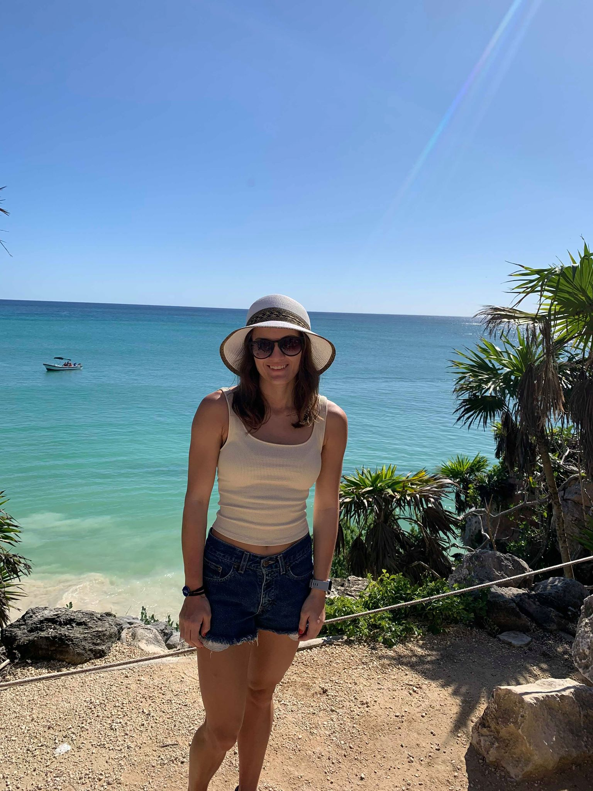
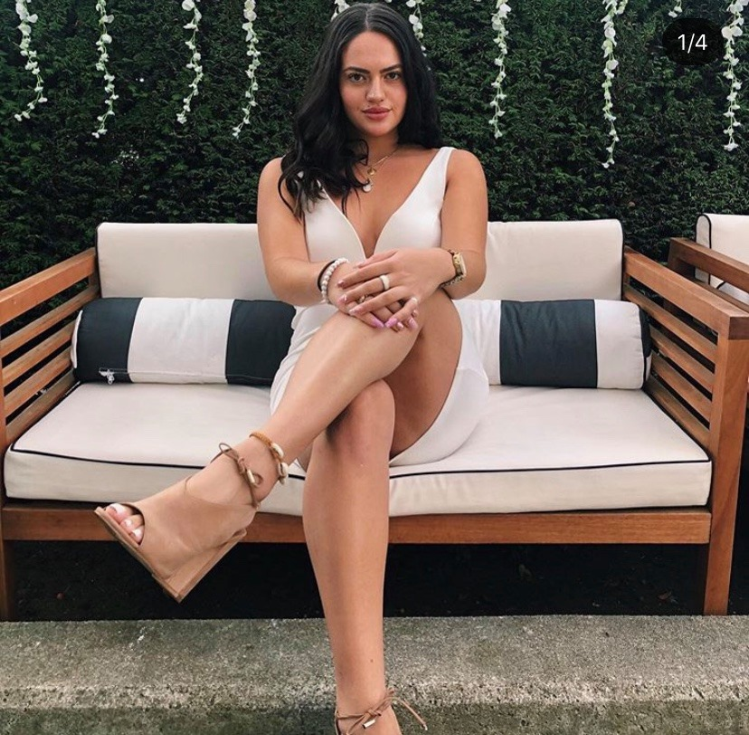
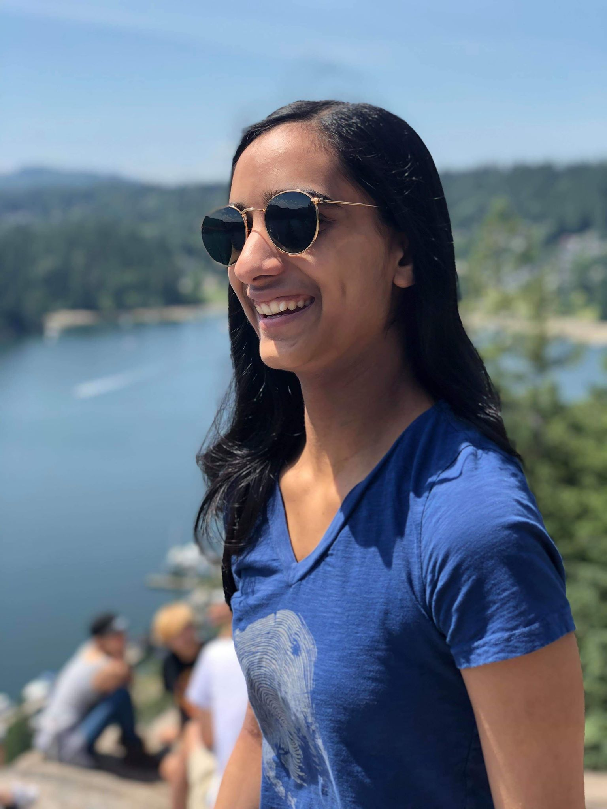
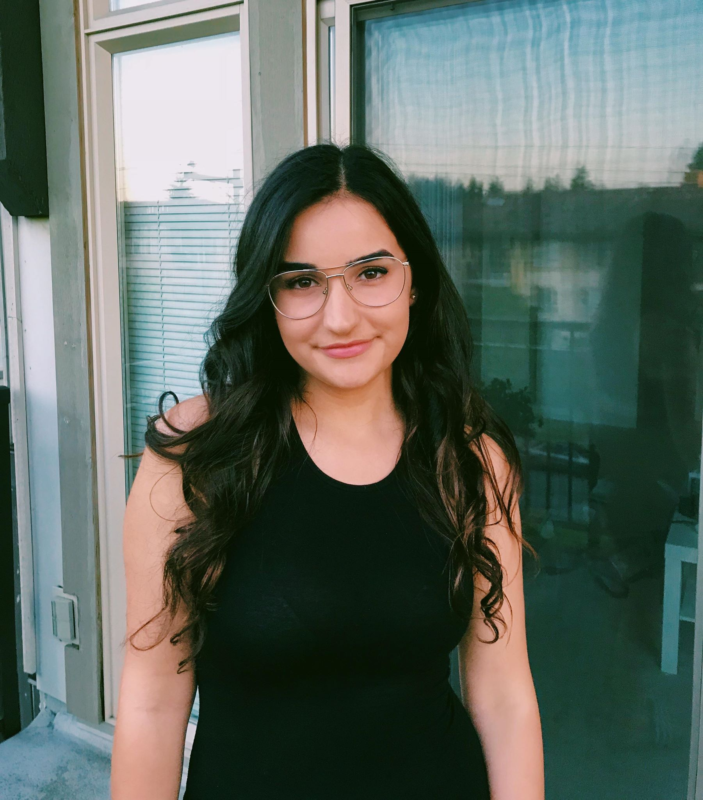
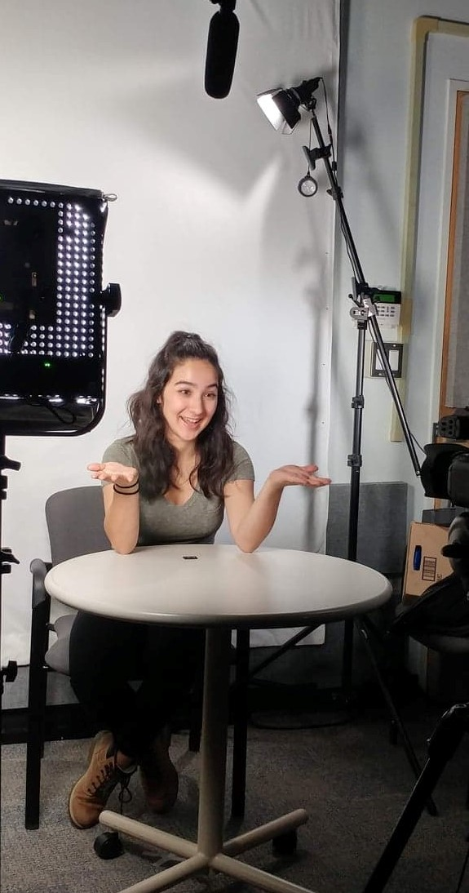

 Hi I'm Pam! I'm a third year ELEC student at UBC! I like to dance,be musical, be fit and make memes. I chose electrical engineering because nowadays,everything needs ELECtricity to work! I'm interested in learning more about robotics for biomedical and automation applications, in addition to strengthening my coding skills for software development!
Hi everyone! I'm Farah and I'm a third year Electrical Engineering student in the Biomedical stream! I love traveling, playing the guitar, basketball, chocolate and coding! Growing up in a fast-paced city like Dubai, I was always fascinated b the techological advancments that were achieved in a short span of time. I decided to pursue Electrical Engineering to contribute to building technologies that revolutionize the world! I am interested in both computer hardware and software.
Hi my name is Madison and I am a third year electrical engineering student in the biomedical stream. I like hiking, knitting, traveling, and doing sudoko puzzles! I chose electrical engineering because of how versatile it is. I am interested in aviation or biomedical industry!
Hi guys! I am Stephanie and I am a third year Electrical Engineering student in the biomedical stream! I love to travel, eat good food, try new things, and of course hit the books! I chose electrical engineering because I could be creative with it plus learn about tech advancments as they happen. I wanted a biomedical focus so I could learn about new and upcoming medical equipment and be part of creating new medical devices!
 Hey! I'm Pavitar aka Pav. I'm a third year electrical engineering student at UBC! I love playing soccer, rock climbing, and cooking! I've always loved technology, solving puzzles and building, so electrical engineering was a perfect fit for me. For the future I'm not sure what I want to focus on there's so many aspects of ELEC I'm interested in, so I'm still exploring my options!
 Hi I'm Maya and I am in my third year of electrical engineering! I love skating, baking, math, and learning how to create new things. I have always been fascinated y outer space, aviation, and new technologies so electrical engineering was the perfect fit for me. I'm hoping to specialize in communications to learn more about transmision lines and the signals that we use everydayin things like phones and internet!
 Hi I'm Leah and I am in my third year of electrical engineering! I love to explore different cuisines, ski, and I'd be lying if I said I didn't like to work! I chose to enter electrical and computer engineering because I absolutly fell in love with programming in my first year of university. I've always loved technology and have a passion for creating new things. Right now I'm interested in firmware development and am thinking about a future working in controls.